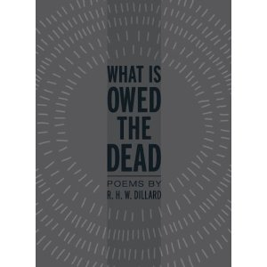

R.H.W. Dillard’s seventh collection of verse, What Is Owed the Dead, includes five poems that previously appeared in the pages of this magazine and manages to offer a unique breadth and depth of literary scope, primarily through its focus on a wide array of dead writers, celebrated and neglected, and its clever use of literary embeddings: passages drawn from the work of the deceased writers it addresses as well as that of those it does not.
Fifty-two poems make up this fifty-three- page collection, each of them sixteen lines long, but that is where uniform matters of form end for the most part. Diction, rhythm, and other conventions sometimes mirror those of the given writer at hand, but are frequently interrupted – sometimes jarringly – by a quotation from a writer (not necessarily the one to whom a poem is addressed) or an excerpt from Dillard’s writing journals, which span back to the 1950s. It is the former of these intrusions or “embeddings,” which lends the collection much, though certainly not all, of its resonance and power.
One of Dillard’s acknowledged literary masters, Nabokov, often performed the technique of embedding as a kind of game which also deepened meaning (the title of his book Pale Fire, for instance, draws upon passages from Shakespeare’s Timon of Athens and Hamlet). At their most dramatic and outrageous, embeddings may grow to become entire rewritings of celebrated literary texts, as seen in the work of Kathy Acker (a writer Dillard admires and author of radical rewritings of Cervantes, Dickens, Proust, and many others). In this way, a certain literary history or revisionist history is conveyed even as the writing simultaneously goes about generating other effects.
The embedding employed in What is Owed the Dead is rarely fluid or subtle. Rather, it readily announces its presence and identity by placing passages from writers in quotation marks and assigning them footnotes, which many readers likely will simply ignore in favor of skipping on to the next poem. Some of the best poems in the collection – “Raven” and “Fame,” for example – limit their embeddings either to a couple of passages by one or two different writers, or several by the same writer. In “Raven,” for instance, Poe and Nabokov are the only quoted writers, which makes the poem spare and austere, as opposed to many of the multiple-writer, quotation-laden poems that follow it:
All those lies, caw caw cacophony,
Smear the air like mustered crows,
Is that what it all amounts to, crowbait,
Glassy eyes, those “windows to the soul” . . . .
“Fame,” on the other hand, employs numerous quotes from six poems and two letters by Emily Dickinson. Yet any potential confusion in employing so many passages is largely dispelled by the fact that they all come from the same writer:
Bolted door, not even “approbation of my dog,
”Then “he kindly stopped” death, lonely “little
Cottage,” fame,1,775 poems, glory, “called back.”
The samplings in these lines arrive from four different sources, yet remain coherent and interwoven largely by virtue of the fact that Dickinson is their common creator.
There does not appear to exist any particular pattern to the dead writers Dillard has chosen to address: the book begins with Poe, Pound and Laurence Sterne and concludes with San Juan de la Cruz, Richard Wright and George Barker. It is Barker, whom Dillard identifies in the book’s credits as “the guiding spirit of this entire enterprise,” who provides the only piece in the book not written mostly by Dillard: the epilogue from his 1950 book, The Dead Seagull, which maintains, “[W]e, the living, are . . . indebted to our predecessors for some small mercies.” Bookending this epilogue is a short epigraph from Geoffrey Hill’s The Triumph of Love on the title page of Dillard’s book: “a daily acknowledgement/of what is owed the dead.” These framing passages from Barker and Hill offer one key (there are others) to reading the poems which lie between. They may be recognized as memorials stemming from indebtedness but which also have the capacity to aid us, as demonstrated by Dillard’s journal entries, in our present states of confusion, depression, and ambiguity.
This conceptual approach should not lead one to the conclusion that Dillard’s book is without humor. To the contrary, the easy familiarity with which he addresses some of the collection’s more canonical poets both humanizes them and offers a degree of levity at which their sycophantic followers very well may take offense. “You wanted it, Emily,” begins the poem to Dickinson, “glory, fame.” He goes on to address Pound as “Ez,” T.S. Eliot as “Tom,” Yeats as “Willie,” and so on. Yet these are instances of playfulness rather than disrespect, and help to rescue a book investigating such dark subject matter from lapsing into macabre plodding. Indeed, as one reads on it becomes clear the volume is as much a celebration of the active creative life of the present as it is a memorial to past lives and works.
An anecdote may serve as a fitting conclusion. A literary mentor once recounted to me that one evening while introducing George Garrett – the writer to whom Dillard’s collection is dedicated – Dillard remarked that Garrett surely was one of the best writers living, and “better than a lot of the dead ones too.” Among other things, this collection shows Dillard the poet as capable of holding his own among many of the departed versifiers to whom he and many others are indebted. We are both in good company and in good hands in the pages of What is Owed the Dead.
Rosalina Leticia’s reviews have appeared in the James Dickey Review as well as a number of Brazilian publications. She lives and writes in Espirito Santo, Brazil.
Pingback: What Is Owed the Dead - R.H.W. Dillard - Flying Object